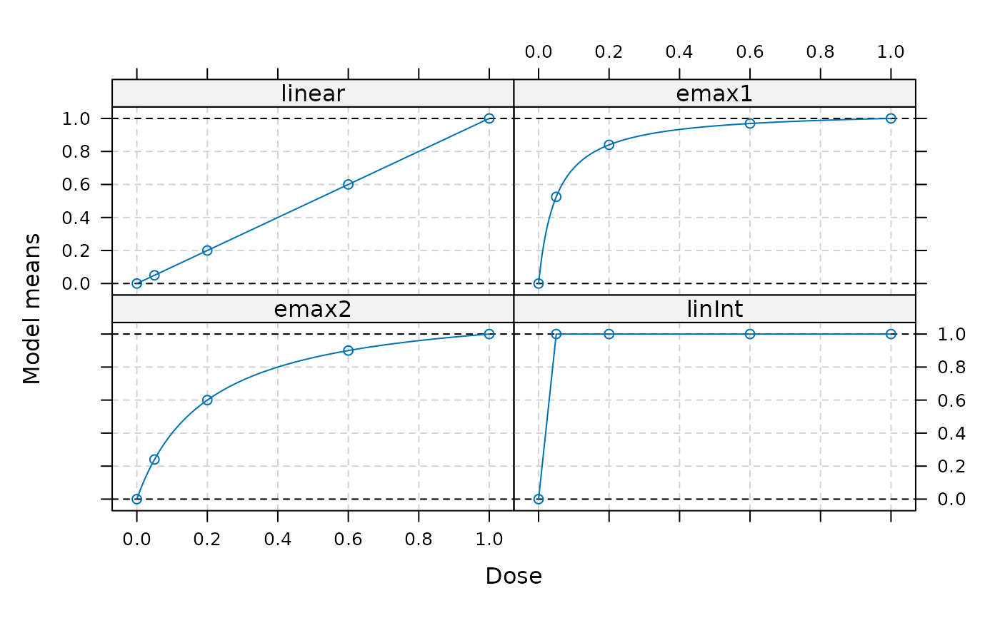
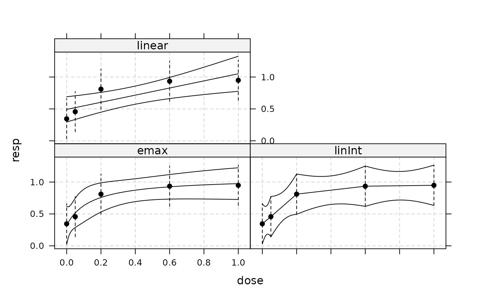
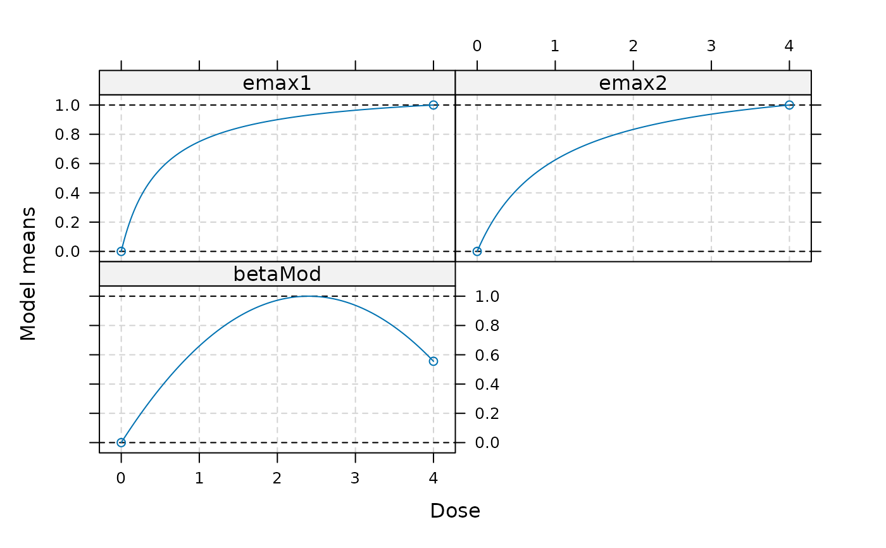
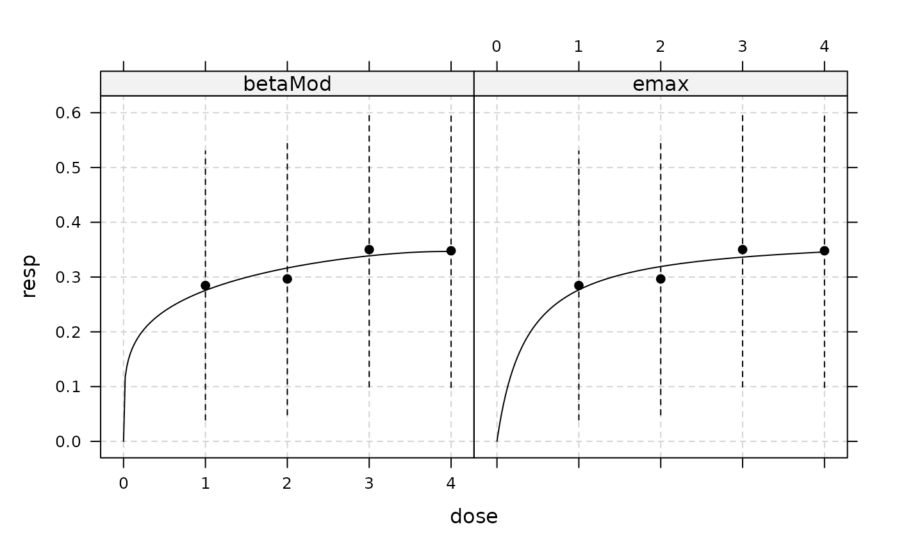

MCPMod - Multiple Comparisons and Modeling
MCPMod.RdTests for a dose-response effect using a model-based multiple contrast
test (see MCTtest), selects one (or several) model(s)
from the significant shapes, fits them using fitMod.
For details on the method see Bretz et al. (2005).
Usage
MCPMod(dose, resp, data, models, S = NULL, type = c("normal", "general"),
addCovars = ~1, placAdj = FALSE, selModel = c("AIC", "maxT", "aveAIC"),
alpha = 0.025, df = NULL, critV = NULL, doseType = c("TD", "ED"),
Delta, p, pVal = TRUE, alternative = c("one.sided", "two.sided"),
na.action = na.fail, mvtcontrol = mvtnorm.control(),
bnds, control = NULL)
# S3 method for class 'MCPMod'
predict(object,
predType = c("full-model", "ls-means", "effect-curve"),
newdata = NULL, doseSeq = NULL, se.fit = FALSE, ...)
# S3 method for class 'MCPMod'
plot(x, CI = FALSE, level = 0.95,
plotData = c("means", "meansCI", "raw", "none"),
plotGrid = TRUE, colMn = 1, colFit = 1, ...)Arguments
- dose, resp
Either vectors of equal length specifying dose and response values, or names of variables in the data frame specified in data.
- data
Data frame containing the variables referenced in dose and resp if data is not specified it is assumed that dose and resp are variables referenced from data (and no vectors)
- models
An object of class "Mods", see
Modsfor details- S
The covariance matrix of resp when type = "general", see Description.
- type
Determines whether inference is based on an ANCOVA model under a homoscedastic normality assumption (when type = "normal"), or estimates at the doses and their covariance matrix and degrees of freedom are specified directly in resp, S and df. See also
fitModand Pinheiro et al. (2014).- addCovars
Formula specifying additive linear covariates (for type = "normal")
- placAdj
Logical, if true, it is assumed that placebo-adjusted estimates are specified in resp (only possible for type = "general").
- selModel
Optional character vector specifying the model selection criterion for dose estimation. Possible values are
AIC: Selects model with smallest AIC (this is the default)maxT: Selects the model corresponding to the largest t-statistic.aveAIC: Uses a weighted average of the models corresponding to the significant contrasts. The model weights are chosen by the formula: \(w_i = \exp(-0.5AIC_i)/\sum_i(\exp(-0.5AIC_i))\) See Buckland et al. (1997) for details.
For type = "general" the "gAIC" is used.
- alpha
Significance level for the multiple contrast test
- df
Specify the degrees of freedom to use in case type = "general", for the call to
MCTtestandfitMod. Infinite degrees of (df=Inf) correspond to the multivariate normal distribution. For type = "normal" the degrees of freedom deduced from the AN(C)OVA fit are used and this argument is ignored.- critV
Supply a pre-calculated critical value. If this argument is NULL, no critical value will be calculated and the test decision is based on the p-values. If critV = TRUE the critical value will be calculated.
- doseType, Delta, p
doseType determines the dose to estimate, ED or TD (see also
Mods), and Delta and p need to be specified depending on whether TD or ED is to be estimated. SeeTDandEDfor details.- pVal
Logical determining, whether p-values should be calculated.
- alternative
Character determining the alternative for the multiple contrast trend test.
- na.action
A function which indicates what should happen when the data contain NAs.
- mvtcontrol
A list specifying additional control parameters for the qmvt and pmvt calls in the code, see also
mvtnorm.controlfor details.- bnds
Bounds for non-linear parameters. This needs to be a list with list entries corresponding to the selected bounds. The names of the list entries need to correspond to the model names. The
defBndsfunction provides the default selection.- control
Control list for the optimization.
A list with entries: "nlminbcontrol", "optimizetol" and "gridSize".The entry nlminbcontrol needs to be a list and is passed directly to control argument in the nlminb function, that is used internally for models with 2 nonlinear parameters (e.g. sigmoid Emax or beta model).
The entry optimizetol is passed directly to the tol argument of the optimize function, which is used for models with 1 nonlinear parameters (e.g. Emax or exponential model).
The entry gridSize needs to be a list with entries dim1 and dim2 giving the size of the grid for the gridsearch in 1d or 2d models.
- object, x
MCPMod object
- predType, newdata, doseSeq, se.fit, ...
predType determines whether predictions are returned for the full model (including potential covariates), the ls-means (SAS type) or the effect curve (difference to placebo).
newdata gives the covariates to use in producing the predictions (for predType = "full-model"), if missing the covariates used for fitting are used.
doseSeq dose-sequence on where to produce predictions (for predType = "effect-curve" and predType = "ls-means"). If missing the doses used for fitting are used.
se.fit: logical determining, whether the standard error should be calculated.
...: Additional arguments, for plot.MCPMod these are passed to plot.DRMod.
- CI, level, plotData, plotGrid, colMn, colFit
Arguments for plot method: CI determines whether confidence intervals should be plotted. level determines the level of the confidence intervals. plotData determines how the data are plotted: Either as means or as means with CI, raw data or none. In case of type = "normal" and covariates the ls-means are displayed, when type = "general" the option "raw" is not available. colMn and colFit determine the colors of fitted model and the raw means.
Value
An object of class MCPMod, which contains the fitted MCTtest object as well as the DRMod objects and additional information (model selection criteria, dose estimates, selected models).
References
Bretz, F., Pinheiro, J. C., and Branson, M. (2005), Combining multiple comparisons and modeling techniques in dose-response studies, Biometrics, 61, 738–748
Pinheiro, J. C., Bornkamp, B., and Bretz, F. (2006). Design and analysis of dose finding studies combining multiple comparisons and modeling procedures, Journal of Biopharmaceutical Statistics, 16, 639–656
Pinheiro, J. C., Bretz, F., and Branson, M. (2006). Analysis of dose-response studies - modeling approaches, in N. Ting (ed.). Dose Finding in Drug Development, Springer, New York, pp. 146–171
Pinheiro, J. C., Bornkamp, B., Glimm, E. and Bretz, F. (2014) Model-based dose finding under model uncertainty using general parametric models, Statistics in Medicine, 33, 1646–1661
Schorning, K., Bornkamp, B., Bretz, F., & Dette, H. (2016). Model selection versus model averaging in dose finding studies. Statistics in Medicine, 35, 4021–4040
Xun, X. and Bretz, F. (2017) The MCP-Mod methodology: Practical Considerations and The DoseFinding R package, in O'Quigley, J., Iasonos, A. and Bornkamp, B. (eds) Handbook of methods for designing, monitoring, and analyzing dose-finding trials, CRC press
Buckland, S. T., Burnham, K. P. and Augustin, N. H. (1997). Model selection an integral part of inference, Biometrics, 53, 603–618
Seber, G.A.F. and Wild, C.J. (2003). Nonlinear Regression, Wiley.
Examples
data(biom)
## first define candidate model set (only need "standardized" models)
models <- Mods(linear = NULL, emax=c(0.05,0.2), linInt=c(1, 1, 1, 1),
doses=c(0,0.05,0.2,0.6,1))
plot(models)

## perform MCPMod procedure
MM <- MCPMod(dose, resp, biom, models, Delta=0.5)
## a number of things can be done with an MCPMod object
MM # print method provides basic information
#> MCPMod
#>
#> Multiple Contrast Test:
#> t-Stat adj-p
#> emax2 3.464 < 0.001
#> emax1 3.339 0.00150
#> linear 2.972 0.00402
#> linInt 2.486 0.01632
#>
#> Estimated Dose Response Models:
#> linear model
#> e0 delta
#> 0.492 0.559
#>
#> emax model
#> e0 eMax ed50
#> 0.322 0.746 0.142
#>
#> linInt model
#> d0 d0.05 d0.2 d0.6 d1
#> 0.345 0.457 0.810 0.934 0.949
#>
#> Selected model (AIC): emax
#>
#> Estimated TD, Delta=0.5
#> linear emax linInt
#> 0.8951 0.2886 0.3115
summary(MM) # more information
#> MCPMod
#>
#> ***************************************
#> MCP part
#> ***************************************
#> Multiple Contrast Test
#>
#> Contrasts:
#> linear emax1 emax2 linInt
#> 0 -0.437 -0.799 -0.643 -0.894
#> 0.05 -0.378 -0.170 -0.361 0.224
#> 0.2 -0.201 0.207 0.061 0.224
#> 0.6 0.271 0.362 0.413 0.224
#> 1 0.743 0.399 0.530 0.224
#>
#> Contrast Correlation:
#> linear emax1 emax2 linInt
#> linear 1.000 0.766 0.912 0.488
#> emax1 0.766 1.000 0.949 0.893
#> emax2 0.912 0.949 1.000 0.719
#> linInt 0.488 0.893 0.719 1.000
#>
#> Multiple Contrast Test:
#> t-Stat adj-p
#> emax2 3.464 < 0.001
#> emax1 3.339 0.00150
#> linear 2.972 0.00402
#> linInt 2.486 0.01632
#>
#> ***************************************
#> Mod part
#> ***************************************
#> ** Fitted model 1
#> Dose Response Model
#>
#> Model: linear
#> Fit-type: normal
#>
#> Residuals:
#> Min 1Q Median 3Q Max
#> -2.097 -0.445 0.136 0.512 2.164
#>
#> Coefficients with approx. stand. error:
#> Estimate Std. Error
#> e0 0.492 0.0998
#> delta 0.559 0.1885
#>
#> Residual standard error: 0.714
#> Degrees of freedom: 98
#>
#> ** Fitted model 2
#> Dose Response Model
#>
#> Model: emax
#> Fit-type: normal
#>
#> Residuals:
#> Min 1Q Median 3Q Max
#> -2.000 -0.442 0.130 0.429 2.088
#>
#> Coefficients with approx. stand. error:
#> Estimate Std. Error
#> e0 0.322 0.152
#> eMax 0.746 0.236
#> ed50 0.142 0.180
#>
#> Residual standard error: 0.706
#> Degrees of freedom: 97
#>
#> ** Fitted model 3
#> Dose Response Model
#>
#> Model: linInt
#> Fit-type: normal
#>
#> Residuals:
#> Min 1Q Median 3Q Max
#> -1.990 -0.397 0.079 0.456 2.062
#>
#> Coefficients with approx. stand. error:
#> Estimate Std. Error
#> d0 0.345 0.159
#> d0.05 0.457 0.159
#> d0.2 0.810 0.159
#> d0.6 0.934 0.159
#> d1 0.949 0.159
#>
#> Residual standard error: 0.712
#> Degrees of freedom: 95
#>
#> ***************************************
#> Model selection criteria (AIC):
#> ***************************************
#> linear emax linInt
#> 220.4986 219.1383 222.8249
#>
#> Selected model: emax
#>
#> ***************************************
#> Estimated TD, Delta=0.5
#> ***************************************
#> linear emax linInt
#> 0.8951 0.2886 0.3115
## predict all significant dose-response models
predict(MM, se.fit=TRUE, doseSeq=c(0,0.2,0.4, 0.9, 1),
predType="ls-means")
#> $linear
#> $linear$fit
#> [1] 0.4923408 0.6040619 0.7157829 0.9950856 1.0509461
#>
#> $linear$se.fit
#> [1] 0.09984282 0.07829697 0.07166124 0.12282570 0.13859522
#>
#>
#> $emax
#> $emax$fit
#> [1] 0.3216107 0.7578039 0.8721944 0.9660905 0.9750049
#>
#> $emax$se.fit
#> [1] 0.15211417 0.11528764 0.09035778 0.11855885 0.12504802
#>
#>
#> $linInt
#> $linInt$fit
#> [1] 0.3449054 0.8103158 0.8723763 0.9451428 0.9487114
#>
#> $linInt$se.fit
#> [1] 0.1592893 0.1592893 0.1126345 0.1259292 0.1592893
#>
#>
## display all model functions
plot(MM, plotData="meansCI", CI=TRUE)

## now perform model-averaging
MM2 <- MCPMod(dose, resp, biom, models, Delta=0.5, selModel = "aveAIC")
sq <- seq(0,1,length=11)
pred <- predict(MM, doseSeq=sq, predType="ls-means")
modWeights <- MM2$selMod
## model averaged predictions
pred <- do.call("cbind", pred)%*%modWeights
## model averaged dose-estimate
TDEst <- MM2$doseEst%*%modWeights
## now an example using a general fit and fitting based on placebo
## adjusted first-stage estimates
data(IBScovars)
## ANCOVA fit model including covariates
anovaMod <- lm(resp~factor(dose)+gender, data=IBScovars)
drFit <- coef(anovaMod)[2:5] # placebo adjusted estimates at doses
vCov <- vcov(anovaMod)[2:5,2:5]
dose <- sort(unique(IBScovars$dose))[-1] # no estimate for placebo
## candidate models
models <- Mods(emax = c(0.5, 1), betaMod=c(1,1), doses=c(0,4))
plot(models)

## hand over placebo-adjusted estimates drFit to MCPMod
MM3 <- MCPMod(dose, drFit, S=vCov, models = models, type = "general",
placAdj = TRUE, Delta=0.2)
plot(MM3, plotData="meansCI")

## The first example, but with critical value handed over
## this is useful, e.g. in simulation studies
MM4 <- MCPMod(dose, resp, biom, models, Delta=0.5, critV = 2.31)